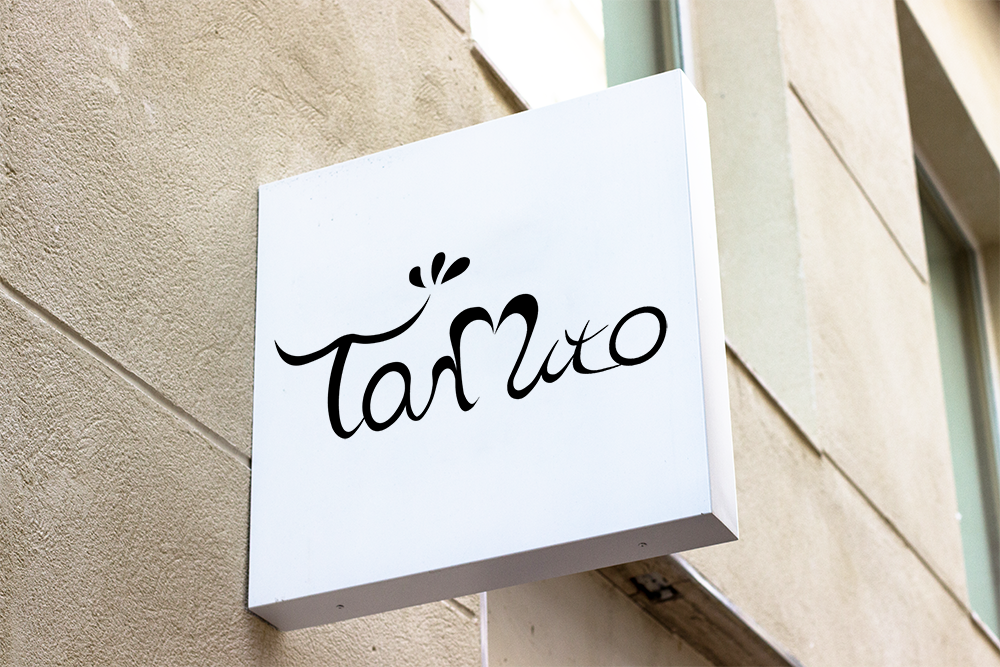
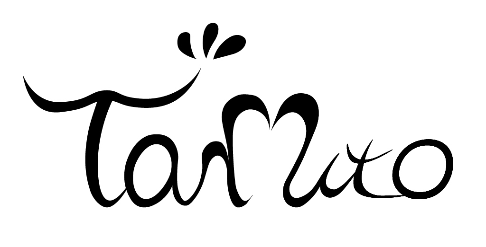
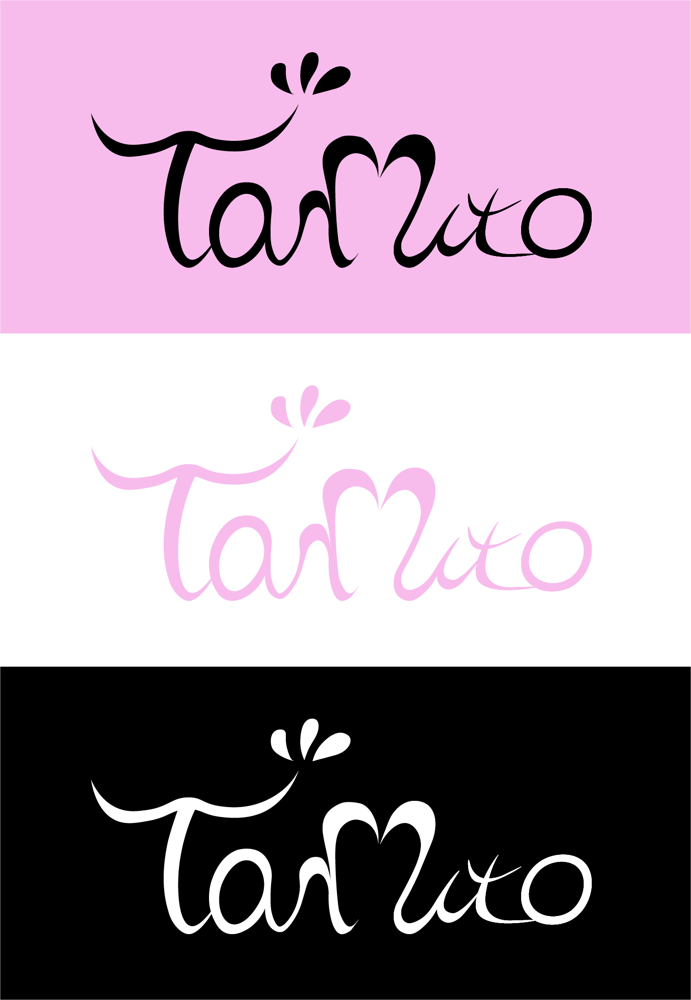
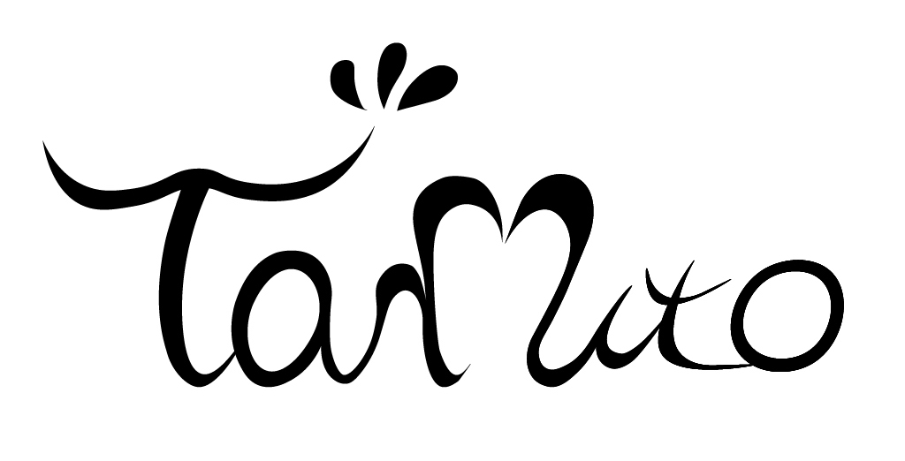
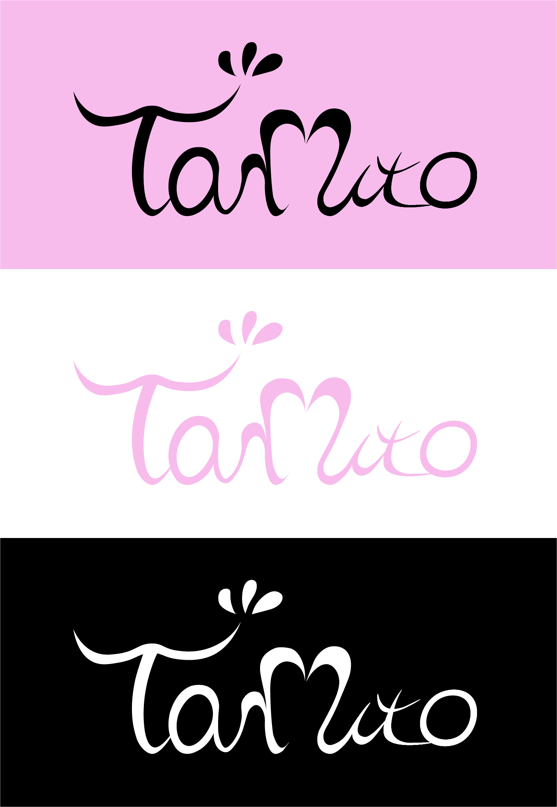

Taruto Logo
期間
2020.2.8〜2020.2.9
顧客
担当
ロゴデザイン
プロジェクト概要
株式会社ファイブスター様が、まつ毛エクステサロンの新ブランドを立ち上げる経緯で、イメージにあったロゴを募集していらっしゃいました。今回はそちらの募集に応募したので、該当の応募作品をプロジェクト内容とさせていただきます。
プロジェクト詳細
①要望(デザインの雰囲気,規定など)
-可愛らしさと品の良さがMIXしたようなおしゃれな雰囲気、都会的な雰囲気
-この外内装に会うような雰囲気
https://beauty.hotpepper.jp/kr/slnH000222931/
-筆記体ロゴをイメージしている
-直接的にタルトを表現しないでほしい
-黒のみか、黒とピンクと白の組み合わせが好き
-可愛らしさと品の良さがMIXしたようなおしゃれな雰囲気、都会的な雰囲気
-この外内装に会うような雰囲気
https://beauty.hotpepper.jp/kr/slnH000222931/
-筆記体ロゴをイメージしている
-直接的にタルトを表現しないでほしい
-黒のみか、黒とピンクと白の組み合わせが好き
②ターゲット
ヘアサロンmacaronのような雰囲気が好きな20〜30代前半女性
(今回できるまつ毛エクステサロンがヘアサロンmacaronの姉妹ブランドになるため)
https://www.macaron.jp/
ヘアサロンmacaronのような雰囲気が好きな20〜30代前半女性
(今回できるまつ毛エクステサロンがヘアサロンmacaronの姉妹ブランドになるため)
https://www.macaron.jp/
デザインイメージに、筆記のロゴタイプをあげていらっしゃったので、そちらを参考にしました。
お店の名前であるTarutoのrとuを♡に見えるようにシェイプを作成したり、それぞれ文字の終点をまつ毛のようなあしらいにして、
上品さと可愛らしさを目指したデザインに仕上げました。  ブラック以外にも、シーンに合わせてロゴを使用できるようにカラー展開をしました。
カラーは、好みの色がピンク・黒・白の3色だったので、そちらを使用しています。  作成前ラフ案
お店の名前であるTarutoのrとuを♡に見えるようにシェイプを作成したり、それぞれ文字の終点をまつ毛のようなあしらいにして、
上品さと可愛らしさを目指したデザインに仕上げました。  ブラック以外にも、シーンに合わせてロゴを使用できるようにカラー展開をしました。
カラーは、好みの色がピンク・黒・白の3色だったので、そちらを使用しています。  作成前ラフ案